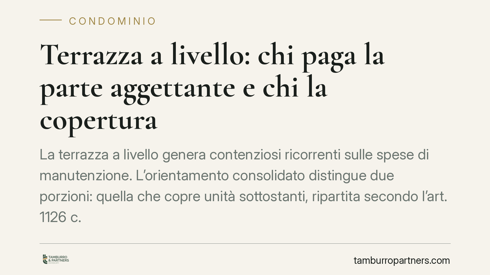

Terrazza a livello: chi paga la parte aggettante e chi la copertura
La terrazza a livello genera contenziosi ricorrenti sulle spese di manutenzione. L'orientamento consolidato distingue due porzioni: quella che copre unità sottostanti, ripartita secondo l'art. 1126 c.c., e quella aggettante oltre il muro perimetrale, che grava sul solo proprietario. Comprendere il confine tra le due parti evita delibere annullabili e liti evitabili in assemblea.

Il problema: una superficie, due funzioni
La terrazza a livello è quella superficie scoperta posta allo stesso piano di un appartamento, con accesso esclusivo dal medesimo, che al contempo funge da copertura per i locali sottostanti.
È proprio questa doppia natura – bene di godimento esclusivo e, insieme, elemento di copertura dell'edificio – a rendere insidiosa la ripartizione delle spese quando si tratta di rifare guaine, massetti, pavimentazione o parapetti.
Il nodo si complica ulteriormente quando la terrazza sporge oltre il perimetro murario dell'edificio: la cosiddetta porzione *aggettante*. Questa parte, infatti, non copre alcuna unità sottostante e non svolge funzione condominiale.
Inquadramento normativo
Il riferimento è l'art. 1126 del Codice civile, dettato per i lastrici solari a uso esclusivo. La norma stabilisce che, quando l'uso del lastrico (o della terrazza) non è comune a tutti i condomini, chi ne ha l'uso esclusivo è tenuto a un terzo della spesa di riparazione o ricostruzione; i restanti due terzi gravano sui proprietari delle unità cui il lastrico serve da copertura, in proporzione al valore.
La giurisprudenza di legittimità ha da tempo assimilato la terrazza a livello al lastrico solare ai fini della ripartizione delle spese, in ragione della funzione di copertura svolta (orientamento consolidato della Corte di Cassazione, Sez. II, in materia condominiale).
Da questo impianto discende una conseguenza logica: l'art. 1126 c.c. si applica solo alla porzione che effettivamente copre locali sottostanti. Dove manca la funzione di copertura, manca la ratio della ripartizione. La parte che aggetta nel vuoto, oltre il muro perimetrale, resta perciò integralmente a carico del proprietario esclusivo, non traendone il condominio alcuna utilità di copertura.
Implicazioni pratiche
Per l'amministratore e per l'assemblea, il principio impone un calcolo articolato quando si delibera un intervento sulla terrazza:
- la spesa per la porzione con funzione di copertura va ripartita secondo lo schema un terzo / due terzi dell'art. 1126 c.c.;
- la spesa per la porzione aggettante va imputata per intero al proprietario esclusivo.
Una delibera che ripartisca indistintamente l'intera spesa tra tutti i condomini, includendo la parte aggettante, rischia di essere annullabile su impugnazione del proprietario o dei condomini onerati indebitamente.
Per il proprietario della terrazza, la distinzione taglia in due direzioni: non può pretendere il concorso condominiale sulla parte aggettante, ma può legittimamente contestare l'addebito a suo carico dei due terzi che spettano ai proprietari sottostanti sulla parte di copertura.
Il ruolo decisivo della documentazione tecnica
Sul piano probatorio, tutto ruota attorno a un dato di fatto: quale porzione copre e quale sporge. Non è una valutazione giuridica astratta, ma un accertamento tecnico.
Diventa quindi centrale disporre di una perizia o di una relazione tecnica che individui con precisione, in pianta e in sezione, il perimetro murario dell'edificio e la superficie che aggetta oltre di esso. In sede di contenzioso è spesso la consulenza tecnica d'ufficio a definire il confine tra le due parti.
Affidarsi a stime approssimative in assemblea, senza supporto tecnico, è la causa più frequente di delibere impugnate.
Cosa fare in concreto
- Fate rilevare da un tecnico, prima di deliberare, quale porzione della terrazza svolge funzione di copertura e quale è aggettante, con misure documentate.
- Distinguete due voci di spesa nel preventivo: una per la parte di copertura (da ripartire ex art. 1126 c.c.), una per la parte aggettante (a carico del solo proprietario).
- Verificate il verbale: la delibera deve dare conto del criterio di ripartizione applicato a ciascuna porzione, evitando addebiti indistinti.
- Conservate la documentazione tecnica allegandola agli atti condominiali: sarà decisiva in caso di contestazione.
- Impugnate nei termini (trenta giorni dalla delibera o dalla comunicazione, ex art. 1137 c.c.) se la ripartizione ignora la distinzione tra copertura e aggetto.
Conclusione
La regola è di ordine e proporzione: il condominio concorre solo dove riceve utilità di copertura. Per tutto ciò che sporge nel vuoto, l'onere è di chi gode in via esclusiva della terrazza. Applicare correttamente questo criterio, con il conforto di un rilievo tecnico, riduce sensibilmente il rischio di liti e di delibere invalide.
---
Contributo informativo a cura di Tamburro & Partners – Avv. Giuseppe Tamburro. Non costituisce parere legale.
Ogni condominio ha una storia a sé.
Se gestisci un'amministrazione e vuoi un confronto su una specifica questione condominiale, scrivi allo studio. Ti rispondiamo entro un giorno lavorativo.